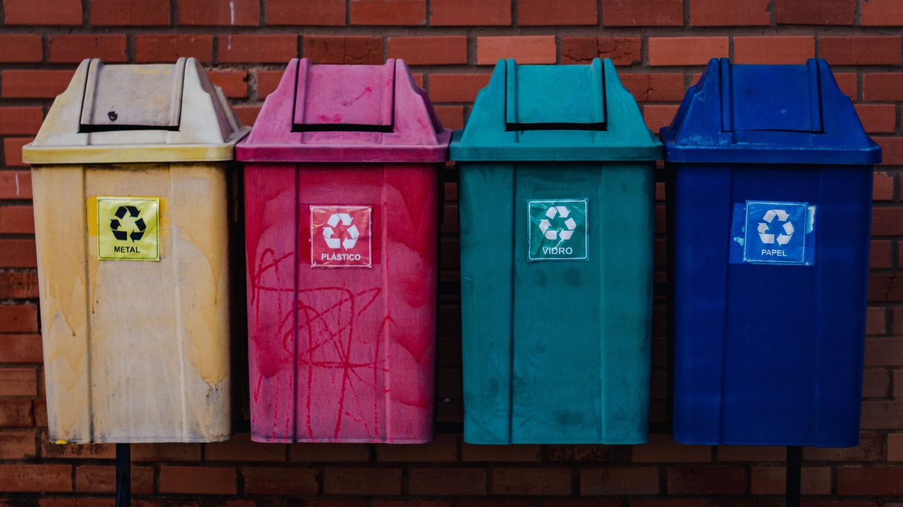
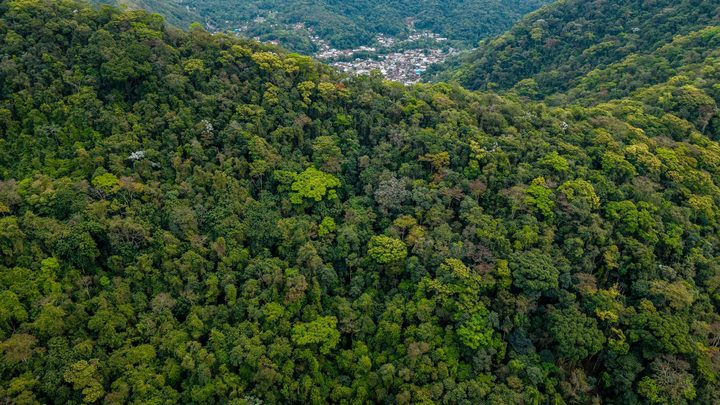

Navegantes · Turismo
Navegantes · TurismoNavegantes faz 64 anos com três dias de festa, regata e torneio de pesca no Pontal
A festa de aniversário que gerou esses resíduos.
Parte do material vai virar seis bancos de praça. Lonas e cenografias de festas anteriores passam por reaproveitamento.
Em 30 segundos · Modo de Leitura, formato original Santa Informa
A festa de 64 anos de Navegantes durou três dias.
O Instituto Ambiental de Navegantes cuidou do lixo.
O trabalho foi com a empresa Eco Local Sustentabilidade.
Foram recolhidos 945,4 quilos de resíduo no total.
Papel e papelão deram 196 kg, o maior item.
Plástico somou 187 kg e vidro, 185 kg.
Latinha deu 23,4 kg e orgânico, 68 kg.
O rejeito contaminado ficou em 286 kg.
Somando os recicláveis, dá 591,4 kg.
Esse material foi para uma cooperativa.
A Eco Local vai fazer seis bancos de praça.
Lona e cenografia de festas antigas viram outra coisa.
Meio AmbientePublicada em Redação Santa Informa

A festa de 64 anos de Navegantes gerou 945,4 quilos de resíduo em três dias. A conta é do Instituto Ambiental de Navegantes, o IAN, que cuidou do lixo do evento junto com a empresa Eco Local Sustentabilidade. Os números saíram no site da Prefeitura de Navegantes em 3 de setembro.
O material saiu separado por tipo. Papel e papelão somaram 196 quilos, o item mais pesado da lista. Depois vieram plástico, com 187 quilos, e vidro, com 185. As latinhas deram 23,4 quilos e os orgânicos, 68. O que não dá para reciclar, chamado de rejeito ou resíduo contaminado, ficou em 286 quilos. Somando papel, plástico, vidro e latinha, dá 591,4 quilos de reciclável, mais da metade de tudo o que foi recolhido. Esse material foi encaminhado para uma cooperativa.
O superintendente do IAN, Diego Dias, resumiu o resultado. "Foram quase uma tonelada de resíduos. Disso, mais de meia tonelada foi resíduo reciclado, que foi encaminhado para uma cooperativa", disse.
Lixeiras foram distribuídas em todas as áreas comuns da festa, e a retirada ficou com uma equipe de limpeza contratada. A destinação do que foi recolhido fica por conta da Eco Local. A empresa também vai produzir seis bancos de praça dentro do modelo batizado de "Navega Lixo Zero".
O trabalho não parou no lixo desta festa. Materiais de eventos anteriores, como lonas, cenografias e credenciais, vão passar por um processo de upcycle, que é quando um material usado vira um produto novo de valor igual ou maior, em vez de ser triturado e virar matéria-prima barata. É o caminho contrário do que costuma acontecer com estrutura de evento, que quase sempre termina em caçamba.
Navegantes fica a pouco mais de uma hora de Itapema e enfrenta o mesmo problema de todo município do litoral: evento grande enche a cidade de gente e de lixo no mesmo dia. Ter o número separado por tipo permite comparar uma festa com a outra e cobrar melhora. É informação que raramente aparece depois de evento público, e aqui apareceu com balança.
O resumo de 30 segundos está no topo e a versão completa é o texto acima. Aqui ficam as três leituras da casa sobre o mesmo assunto.
Clara, a otimista
Festa grande costuma deixar rastro, e desta vez o rastro veio pesado e contado. Mais de meia tonelada saiu separada e foi para cooperativa, ou seja, virou renda para quem trabalha com reciclagem.
E ainda tem os seis bancos de praça. O copo que alguém jogou fora no sábado pode acabar como lugar de sentar na frente do mar. Esse tipo de fechamento de ciclo é raro e merece ser copiado pelas cidades vizinhas.
Seu Prudêncio, o criterioso
Merece atenção o número do rejeito. Foram 286 quilos que não dá para reciclar, quase 30% de tudo o que saiu da festa. Rejeito alto em evento costuma significar reciclável sujo de comida ou bebida, e isso se corrige com mais lixeira e mais orientação, não com mais caminhão.
Vale acompanhar também a conta que não bate. A lista publicada aponta 68 quilos de orgânico, e a fala do superintendente na mesma matéria fala em pouco mais de 200 quilos. Uma das duas informações precisa de correção, e quem lê fica sem saber qual.
Fora isso, o mérito é claro. Pesar o lixo por categoria e publicar o resultado é prestação de contas de verdade, do tipo que permite comparar o ano que vem com este. Muita prefeitura não faz.
Caco, o sarcástico
Navegantes fez 64 anos e ganhou quase uma tonelada de lixo de presente. Aniversariante nenhum merece.
Mas olha o lado bom: pesaram tudo, separado por tipo, com vírgula e tudo. Os 23,4 quilos de latinha contam uma história que ninguém precisa que eu explique.
E o copo vai virar banco de praça. Daqui a pouco a gente senta em cima da própria festa, o que é bem mais confortável do que parece.
Fontes: Prefeitura de Navegantes, publicada em 3 de setembro de 2026, com texto de Marília Cordeiro, de onde saem o total de 945,4 quilos recolhidos nos três dias da festa de 64 anos, a parceria entre o Instituto Ambiental de Navegantes e a Eco Local Sustentabilidade, a lista com 187 quilos de plástico, 23,4 de latinhas, 196 de papel e papelão, 185 de vidro, 68 de orgânicos e 286 de rejeito e resíduo contaminado, a fala do superintendente Diego Dias, a distribuição de lixeiras nas áreas comuns, a produção de seis bancos de praça no modelo Navega Lixo Zero e o reaproveitamento de lonas, cenografias e credenciais de eventos anteriores. A imagem do topo é ilustrativa, de banco gratuito.
Navegantes · TurismoA festa de aniversário que gerou esses resíduos.
 Itapema · Meio Ambiente
Itapema · Meio AmbienteEducação ambiental com estudantes, aqui em Itapema.

Santa Catarina · Meio AmbienteOutra conta ambiental fechada em Santa Catarina.